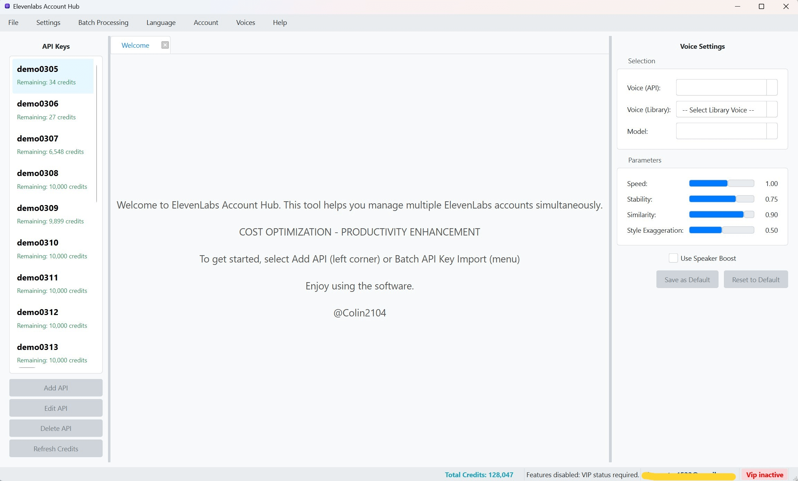

Tổng quan Giao diện Người dùng
Bố cục Chính của Phần mềm
Giao diện của ElevenLabs Account Hub được thiết kế với mục tiêu mang lại trải nghiệm trực quan và hiệu quả cho người dùng. Bố cục chính bao gồm các thành phần sau:
 (Hình ảnh: Giao diện chính của ElevenLabs Account Hub với các khu vực được đánh dấu)1. Thanh Menu (Menu Bar)
Nằm ở phía trên cùng của cửa sổ, Thanh Menu cung cấp quyền truy cập vào tất cả các chức năng chính của ứng dụng, được tổ chức thành các menu thả xuống logic:
- File: Chứa các lệnh liên quan đến quản lý Khóa API (Thêm, Xóa, Làm mới Tín dụng), đóng các tab làm việc và thoát ứng dụng.
- Settings: Cho phép bạn truy cập Cài đặt chung của ứng dụng (như thư mục lưu trữ mặc định, ngôn ngữ hiển thị), làm mới bộ đệm (cache) giọng nói và mô hình từ ElevenLabs, và xóa tệp nhật ký (log) của ứng dụng.
- Batch Processing: Mở các cửa sổ chức năng cho việc Xử lý Hàng loạt TTS, Nhập hàng loạt Khóa API từ tệp CSV, và Quản lý Proxy Pool chung.
- Language: Cho phép bạn thay đổi ngôn ngữ hiển thị của toàn bộ giao diện phần mềm.
- Account: Cung cấp các tùy chọn để Đăng nhập, Đăng xuất khỏi tài khoản người dùng và xem Thông tin Tài khoản chi tiết (bao gồm trạng thái VIP).
- Voices Library: Mở các cửa sổ chuyên dụng để quản lý "My Voices" (các giọng nói tùy chỉnh của bạn trên ElevenLabs) và khám phá "Library" (thư viện giọng nói công cộng của ElevenLabs).
- Help: Cung cấp liên kết đến trang hướng dẫn sử dụng này và hiển thị thông tin "Giới thiệu" (About) về phiên bản phần mềm.
2. Cột Trái: Danh sách Khóa API (API Key List)
Đây là trung tâm quản lý các Khóa API ElevenLabs của bạn. Tại đây bạn có thể:
- Xem danh sách tất cả các Khóa API đã được thêm vào phần mềm, cùng với tên gợi nhớ của chúng.
- Theo dõi thông tin tín dụng (character credits) cho mỗi khóa: số ký tự đã sử dụng và tổng giới hạn ký tự.
- Thực hiện nhanh các thao tác:
- Thêm Key: Mở hộp thoại để thêm một Khóa API mới.
- Sửa Key: Chỉnh sửa thông tin của Khóa API đang được chọn.
- Xóa Key: Xóa Khóa API đang được chọn.
- Refresh Credits: Làm mới thông tin tín dụng cho Khóa API đang được chọn (hoặc tất cả các khóa thông qua menu File).
- Khi bạn nhấp chuột vào một Khóa API trong danh sách này, một tab làm việc tương ứng sẽ được mở hoặc kích hoạt ở Cột Giữa, và Bảng Cài đặt ở Cột Phải sẽ hiển thị các cài đặt liên quan đến khóa đó.
3. Cột Giữa: Không gian Làm việc TTS theo Tab (TTS Workspace)
Đây là khu vực chính nơi bạn thực hiện các tác vụ chuyển văn bản thành giọng nói (Text-to-Speech).
- Mỗi Khóa API được chọn từ Cột Trái sẽ mở ra một tab làm việc riêng biệt tại đây. Điều này cho phép bạn dễ dàng chuyển đổi giữa các Khóa API và duy trì các ngữ cảnh làm việc khác nhau (ví dụ: văn bản đang soạn, lịch sử TTS riêng).
- Bên trong mỗi tab TTS, bạn sẽ tìm thấy:
- Ô nhập văn bản (Text Input Area): Một vùng lớn để bạn nhập hoặc dán đoạn văn bản cần chuyển đổi thành giọng nói. Có bộ đếm ký tự để theo dõi độ dài văn bản.
- Nút "Generate Audio": Nhấn nút này để bắt đầu quá trình tạo giọng nói cho văn bản đã nhập, sử dụng các cài đặt từ Bảng Cài đặt (Cột Phải).
- Nút "Stop": Xuất hiện khi quá trình tạo giọng nói đang diễn ra, cho phép bạn hủy bỏ tác vụ.
- Thanh tiến trình (Progress Bar): Hiển thị trạng thái khi phần mềm đang xử lý yêu cầu TTS.
- Bảng Lịch sử TTS (History Table): Liệt kê các lần tạo giọng nói trước đó cho Khóa API của tab này, bao gồm thông tin về thời gian, tên tệp, giọng nói đã dùng, thời lượng, tín dụng ước tính, trạng thái và các hành động (mở thư mục, xóa).
- Khi không có Khóa API nào được chọn (ví dụ: khi mới khởi động phần mềm), một tab "Welcome" (Chào mừng) có thể được hiển thị với thông tin giới thiệu hoặc hướng dẫn nhanh.
4. Cột Phải: Bảng Cài đặt (Settings Panel)
Bảng này cho phép bạn tùy chỉnh chi tiết các tham số cho việc tạo giọng nói, áp dụng cho tab TTS đang hoạt động ở Cột Giữa.
- Lựa chọn Giọng nói (Voice Selection):
- Voice: Chọn từ danh sách các giọng nói có sẵn trên tài khoản ElevenLabs của Khóa API đang hoạt động (bao gồm cả "My Voices" của bạn).
- Library Voice: Chọn từ danh sách các giọng nói bạn đã lưu vào Thư viện Cục bộ của phần mềm (từ Voice Library của ElevenLabs).
- Lựa chọn Mô hình (Model Selection): Chọn mô hình AI của ElevenLabs để sử dụng (ví dụ: Multilingual v2, English v1).
- Các Tham số Giọng nói (Voice Parameters): Sử dụng các thanh trượt để điều chỉnh Tốc độ (Speed), Độ ổn định (Stability), Độ tương đồng (Similarity Boost), và Kiểu cách/Cường độ (Style/Intensity).
- Tùy chọn Bổ sung (Additional Options):
- Use Speaker Boost: Bật/tắt tính năng cải thiện chất lượng âm thanh.
- Use Proxy Pool: Bật/tắt việc sử dụng Proxy Pool chung cho yêu cầu TTS này.
- Nút Hành động:
- Save Settings: Lưu các cài đặt hiện tại làm hồ sơ mặc định cho Khóa API đang hoạt động.
- Reset Settings: Đặt lại các cài đặt về hồ sơ mặc định đã lưu trước đó cho Khóa API này.
5. Thanh Trạng thái (Status Bar)
Nằm ở phía dưới cùng của cửa sổ, Thanh Trạng thái cung cấp các thông tin nhanh và hữu ích:
- Thông báo trạng thái: Hiển thị các thông báo về hoạt động hiện tại của ứng dụng (ví dụ: "Sẵn sàng", "Đang tạo giọng nói...", "Lỗi API", "Đã lưu cài đặt").
- Tổng Tín dụng Còn lại: Hiển thị tổng số ký tự tín dụng còn lại từ tất cả các Khóa API đã được thêm và kiểm tra.
- Email Người dùng: Hiển thị địa chỉ email của tài khoản Google đã đăng nhập.
- Trạng thái VIP: Cho biết bạn có phải là người dùng VIP hay không và ngày hết hạn VIP (nếu có).